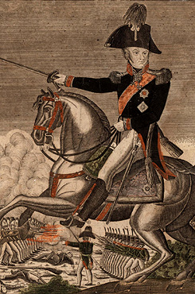

Николай Николаевич Раевский (1771—1829) — генерал от кавалерии. Командовал 7-м пехотным корпусом. Успешно действовал в боях у Салтановки, под Смоленском, в Бородинском сражении (оборона батареи Раевского), под Малоярославцем. Отличался храбростью и умелым управлением войсками. Участвовал в заграничных походах 1813—1814 гг.

Генерал Аншев Николай Николаевич Раевский.